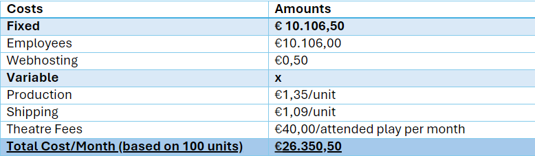

General Information
This branded website is publicly available at 222359.github.io/Class1Group5_2324_PRJ4/ (please change text and hyperlink destination)
This website was created by
- Quinten Bartelink (ID: 222359)
- Diana Bălaş (ID: 221700)
- Noah Beckmann (ID:224036)
- Eliza Bijl (ID:220111)
Content
Please clarify here the match between students and pieces of content. Make sure that you provide a link to the correct page within the website
| # | Student ID | Value | Name and link of content |
|---|---|---|---|
| 1. | 222359 | 3 | Accessibility wwwwww |
| 2. | 221700 | 3 | Passion for the Arts |
| 3. | 224036 | 3 | Collaboration |
| 4. | 220111 | 3 | Connection |
Production
Design Elements
Please provide a list of design elements alongside their justifications:
-
A colour scheme (with HTML colour codes, which must be consistent with your final website)
— see the example below from the BUas brand book:
- #590E15 (Chocolate Cosmos) The dark red colour refers to
- #81241A (Falu Red) Dark brown signifies…
- #FBECCB (Papaya Whip) Dark brown signifies…
- #CEA458 (Earth Yellow) Dark brown signifies…
- #0B526C (Midnight Green) Dark blue signifies…
- Font choices
- UI patterns (e.g. grids, carousels, menu organizations etc.)
- Home(/Landing Page): We have decided to use a single video banner, to catch the user's eye. Encouraging to find out more on the other pages.
- Pass page: To highlight the variety we offer, we have opted to use cards to show the three passes that we offer. Further making use of two sections that are separated by the cards to provide additional info.
- Theatres page: To give the users an idea of what their experience in different theatres might be, we chose to use a carousel with different pictures of the city and theatre with extra information.
- Aboutus page: By dividing the aboutus page in different sectors, we want to highlight the separate pieces of copy, such as the values and meet the team.
- The structure of the navigation and content is based on the flow of information needed in order to learn about our pass, purchase it, and find out about where they can use it. In other terms, The home page envokes curiousity, The passes page shows information about the passes and what the benefits are of each, and The theatre page information about where they can use the pass after having purchased it. Lastly, on the about us page, there is extra info about the company, if the customer wants to find more out about the company behind the passes they just read about.
- All these elements must be justified by referring to the theory and/or vocabulary of design
- Please relate these elements to other units, for example:
- How does website design fit the values and personality of the brand?
- How does website design fit the marketing and communication strategy?
- How does website design help showcase the unique value proposal of the product?
Credits
- HTML template:(buas-media-interactive/prj4-group-template)
- Video:
- Images:
- Koninklijk Theater Carre, "Zichtlijn"
- Adobe Stock Photo, "Canal Houses of Amsterdam"
- Rijksmuseum
- Vlaamsbouwmeester, "Theaterplein"
- Luc Mercelis, "Grote markt"
- Shutterstock, "Antwerp Grote Markt"
- Picl, "Chasse Theater"
- Adobe stock, "Historic Breda"
- Chasse Theater, "Chasse Cinema"
- Luxembourg City, "Grand Theatre"
- Visit Luxembourg, "Grand Theatre"
- Atelier, "Grand theatre"
Testing Report
(All video footage can be found in Appendix #)
- Testing goals: The goal of the testing phase is to understand whether our UI is clear, and if the usability is sufficient.
- Testing methods:
- The test’s participants: All participants are in our target group's age range and are students. Amount of participants is 5
- The test’s setting: The tests are performed both in person and online, whichever the participant prefers.
- The test’s protocol: (Recorded with phone in person/recorced via teams & discord online.)
- Can you read some information about a pass you would like to purchase?
- Could you tell me what the mission is of our brand?
- Could you tell me the teammembers names?
- Can you go back to the home page and tell me the contact details?
- Can you tell me some info about theatres in luxembourg?
- What are some things that you are missing? Or something you would like to see improved?
- Testing results:
- Positive aspect: (Ranked by importance)
- 1. Landing page video is very appealing.
- 2. Clear navigation, uability of the navbar is perfect.
- 3. Easy to find the contact information
- Negative aspects/Suggestions: (Ranked by importance)
- 1. Dropdown menu for the about us page would make it much clearer.
- 2. Carousel arrows on the theatre page are not quite visible.
- 3. Image scale of theatre page works on all devices, except for 2k monitors
- 4. Extra contact page, besides the current existing footer could prove useful. (However the footer by itself is fine.)
- 5. Extra button to the passes page on landing page, if it looks visually good.
- 6. Hover-activatable dropdown menu, instead of clickable.
- Improvements that have been implemented on the final website (or that would be implemented if doing so would be too complex)
- [IMPLEMENTED] Carousel arrows have been enlarged to increase their visibility.
- [TO BE IMPLEMENTED] In-page dropdown menu
- [TO BE IMPLEMENTED] Hover-activatable dropdown menu
Marketing
Context of campaign and promotional activities
Our brand, Theatralia, focuses on making theatre accessible to everyone around Europe. We acknowledge the importance of providing equitable access to theatre plays for every theatre lover in the form of a theatre pass. Our values are fostering connections, passion for the performing arts and accessibility. Our marketing campaign aims to spread awareness and provoke curiosity about our new website and the services that can be found on it. Furthermore, we want our audience to foster a sense of community by coming along on the journey of developing our brand that is tailored to their needs.
Our target audience is made up of international young adults between the ages of 18-25. Most of them are working students who are cultural enthusiasts, socializers and enjoy art as a form of escaping from daily struggles. According to Throsby et al. (2023) theatre-goes of all ages prefer experiences that engage the intellect and emotions. Also, one in five 16 to 24 year olds said that going to a live performance or musical would be their perfect evening out with friends giving them the chance to connect with others (Zest Theatre’s Toby Ealden: How Can We Get Generation Z Into Theatres?, n.d.).
According to (Statista, 2024) the top 3 most used platforms of our target audience as of September 2023 are: YouTube, TikTok and Instagram. Furthermore, our team conducted interviews with members of our target audience where this statistic was confirmed. The interviewees mentioned that their preferred platforms are Instagram, for connecting with people and TikTok as a means of gathering information in the shape of short-form, entertaining videos. Based on the statistics and the interviews previously mentioned, our chosen platforms are Tiktok and Instagram (Zote, 2024). On these platforms we will make posts during the week on Tuesday, Wednesday and Thursday and during the weekend on Saturday according to the newly observed media behaviours at the beginning of 2024 (Braoulias, 2024). As for the times, according to Ghatak (2024), over-all the best times to post on social media are between 6 PM to 9 PM and 12 PM to 3 PM. Our chosen content format will be reels and still (edited) images for Instagram as well as videos for TikTok which will take the form of the newest entertaining trends but with an added layer of information. With this in mind we created the following content calendar (below, 1st tab of the document):
PRJ4 Content Planning.xlsObjectives
Reach objective: We want to reach 100 accounts by the 1st of April. Affect objective: We want our audience to feel curious towards the new products by the 1st of April. We can measure this by: Instagram: We will keep track of impressions, post reach, follower count, following growth rate and reactions (likes and interactions) TikTok: We will keep track of video views, likes and profile views. Response objective: We want 75% of the accounts reached to follow our social media by the 1st of April. We want 25% of the accounts reached to visit our website by the 1st of April. Instagram: We will keep track of impressions, post reach, follower count, following growth rate and reactions (likes and interactions)
Learning Points
During the marketing campaign, we learned how important it is to understand your target audience thoroughly and to identify their social media usage patterns. Our thorough analysis of the audience through research and interviews enabled us to create content that maximized our reach in the short 4 weeks of promotion that we had. Although the campaign was short, we managed to gather enough insights to better our future planning for the upcoming weeks of the campaign. We initially expected the creation of the content to be an issue, however we managed to adjust it as needed along the way. For example, we began by posting still images on Instagram, however we realized that we get more exposure through reels, which we started posting more regularly than the images. Another thing that we noticed was the lack of interaction with our posts, which we tried to fix by implementing a new series of posts for a weekly quiz called “Saturday Showdown”, in the hopes of people commenting on the posts. When the quizzes didn't improve the quality of the interactions, we took further measures by posting the questions from the quiz on stories as well. This way we managed to get people to interact more with the content. When it comes to consistency and posting times, our initial research suggested posting on Tuesday, Wednesday, Thursday and Saturday; which worked well, however the times at which we made our posts initially proved to be less engaging, so by checking our insights (include insight-Appendix 1) and we changed them from 6PM to starting to post between 9AM-12PM. Additionally we encountered some difficulties with gaining followers from the right demographic of our target audience and we decided to conduct some research and follow people who where interested in theatre and who were already following specific hashtags and existing accounts of theatres (include analitycs-Appendix 2). When it comes to our second platform, TikTok, we had the same issues when trying to gain a following, however we did not apply the same tactic as we did for Instagram, which could be a tactic to consider in our future planning or trying to optimize our content more to fit the platform better, as a lot of our TikToks were based on the pre-existing reels that we were posting on Instagram. Moreover, we realized how important preparation is. By preparing our content calendar ahead of time we managed to easily keep on top of our posting schedule or adjust things before posting them if needed. It also helps keep an eye out over whether posts become too repetitive or less engaging for the audience. Over-all our biggest learning points are that consistency, research and attention to the audience are key for a successful marketing campaign, however the complexity of each stage of such a campaign shouldn't be underestimated.
Future Planning
During the 4 week execution of our campaign, we learned a lot and we examined the success of the promotion by checking if our initial goals were met.
Reach Objective
Our reach objective was that we wanted to reach 100 accounts by the 1st of April. This objective has proven to be successful with a number of (include number) reaches on Instagram and (include number from unique viewers) reaches on TikTok (Also include screenshots of the numbers from the insights- Appendix 3 & Appendix 4).
Response Objectives
Our response objectives were getting 75% of the accounts reached to follow our social media (which meant 75 followers for a reach of 100) and 25% of the accounts reached to visit our website by the 1st of April (which means 25 accounts for 100 accounts reached). When it comes to followers, on Instagram we gathered (number of followers), which is equivalent to (include the percentage of followers). For TikTok we gathered (include number of followers), which is equivalent for (include percentage of followers) (include pictures for evidence- Appendix 5 and Appendix 6). This shows that (include conclusion). When it comes to people visiting our website, this goal hasn't been reached due to the website not being finished and available to the target audience.
Affect Objective
For our affect objective, we wanted our audience to feel curious towards our new product by the 1st of April. On Instagram we measured this aspect by tracking impressions (include number of impressions), post reaches (include the lowest reaching post and the highest reaching post number), following growth rate (include number for growth rate) and reactions (likes and interactions) (include number of the last two)(include evidence pictures- Appendix 7). On TikTok we kept track of video views (include number), likes (include number) and profile views (include number) (include evidence pictures- Appendix 8). This shows that (make conclusion).
Future Planning Based on Reflection of the Objective Performance
As mentioned in the learning points, there are aspects that we would like to improve moving forward with our campaign. For the upcoming 4 weeks we want to focus on reaching the goals that haven't previously been achieved and adjust the ones that have accordingly (write which ones based on the conclusions from the previous paragraph). To ensure us reaching the new desired outcome, we plan on implementing more reels in our Instagram posts as well as creating more tailored content for TikTok instead of reposting the Instagram reels. Moreover, we will start posting our quiz series based on when our audience is more active to ensure we get the most exposure and chance of engagement out of them. When it comes to stories, a higher number of them should be made weekly due to their high potential of driving traffic to the page. We will also continue to post the upcoming content based on the newly found best times and days of posting (include them based on the insights- Appendix 9). When it comes to followers, we will start implementing the strategy of reaching out to accounts with previous similar interests on TikTok as we did on Instagram to make sure we will be seen by the right demographic, and on Instagram we will try to further foster a bond with our existing followers and get them to engage with the newly formatted content. We will also make sure to prepare our content calendar ahead of time as that proved to be helpful with consistency and changes in the previous weeks of promotion. With this in mind we created the following content calendar for the upcoming 4 weeks (belo, 2nd tab of the document :
PRJ4 Content Planning.xlsxProfessionalism
Below are screenshots of our social platforms: Instagram and TikTok (Images linked to social media urls)
Management
Lean Canvas
Version below is the final lean canvas, however all other drafts and versions can be found in Appendix #X
Problem
- Studies on theatre visits have showed that one of the reasons that students don’t go to plays, is because ‘’students attach strong feelings to the value they get for their money’’ (Damen, 2023), concluding that our target group finds theatre plays too expensive for what they will get in return. This is also what we found in our problem interviews. Students have said that they don’t have enough money to go to plays. This problem reduces accessibility to the theatre and makes it appear exclusive to the wealthier people. An existing alternative is that some local theatres offer seasonal theatre passes that allow buyers to purchase tickets at a discounted fee (Onbeperkt Kleine Zaal Abonnement, n.d.). Another alternative is the ‘Podiumpas’. This pass gives you unlimited access to a few selected venues in the Netherlands for a set price a month (Podiumpas, n.d.).
- Our problem interviews showed that lack of information about theatre was a problem as well. Students are not aware of upcoming plays or what is currently playing at venues near them. An existing alternative is that some theatres have a newsletter system in place and most of them do offer a list of the plays that can be viewed at their specific theatre.
- Another problem that we found was the Language Barrier. International students told us that there are very limited plays for them to visit. An existing alternative is that bigger theatres seem to have a variety of plays that are performed in English. Amsterdam now has its own English-spoken theatre as well (Van Gelder, 2023).
- During our interviews we have also found that theater enthusiasts consider promotional efforts for theatre ineffective. An already existing alternative is that theatres promote the upcoming plays with newsletters and posters.
Solution
- Our solution to the problem is the subscription-based Theatre Pass, which will offer the customer the ability to attend multiple theatre plays at a lower price, while making the information about these plays easily accessible through the website and the way the bundles in the passes are created. Customers pay a set price per month, giving them access to a limited amount of theatre plays. In its first stages it focuses on the Netherlands, Belgium, and Luxembourg. This leads us to the following three subscription plans: Benelux, Country, and Local.
Customer segments
- Our customer segment is made up of international young adults between the ages of 18-25, residents in the Netherlands, Belgium, and Luxembourg, who are mostly working students and cultural enthusiasts, socializers and enjoy art as a form of escaping from daily struggles.
- The second part of our customer segment also focuses on a subgroup of the existing audience. We'll also reach people who not only love theatre, but also actively participate in productions. We found out through interviews that these categories of people often overlap, so we also want to reach that subset. These people are often in the same demographic and social segments as the previous groups and often enjoy the same activities, in addition to making theatre as actors or production crew.
Unique value proposition
- With the convenience of a single subscription, customers get access to a variety of theatre plays. People get the most out of the money they spend on their pass, and they become more motivated to attend these plays and search for information about the best ways to use up their pass. Our website provides this information all in one place.
Unfair advantage
- The three different subscription plans offer our customers flexibility, as they have the ability to choose a plan based on their geographic preference.
- The pass is beneficial for the theatre venues as well as it will gain them exposure and visitors, making them inclined to collaborate with us.
- Theatralia is likely to be supported, and possibly funded, by cultural foundations, as they often support initiatives that make the entertainment sector more accessible, especially those targeted to young adults (Kunst en Cultuur, n.d.).
Channels
- Online platform: our website where customers can find our product and information about us. Through SEO our customers will find our website easily.
- Social media: our Instagram and TikTok account where we keep our target audience up to date about our product and website.
- Partnerships with theatre venues and cultural organizations: the venues that we will collaborate with can promote us through flyers, posters, or their own social media. Cultural organizations can also promote us through their own promotional channels, such as (online) newsletters, social media, and websites.
- Word of mouth: the theatre community is close, and the word will spread easily. Especially through social media new trends can spread fast.
Key metrics
- We have 326 reaches
- we gathered 142 followers, which is equivalent to 43.56% of the goal
- Our highest post reach is 195.
- Our total number of interactions in one month is 150.
- TikTok
- We gathered 36 followers, which is equivalent to 0.6647% of the goal
- We have 4,812 reaches.
- We have 6.792 video views.
- We have 159 likes.
- We have 134 profile views.
- Since our website is due to publish on 5 april 2024, we therefore had no way of measuring the "success" of our company during the past month. Because of this limitation, we have decided to base this measurement on the only way we could engage with our audience, which is through social media. Based on the analytics over the past month, we can conclude that we have been "successful" on Instagram, less successful" on TikTok. We reached our Instagram goal with a 144% of our total following. We, however, didn't reach our TikTok goals, as we only gathered 36 out of 100 attempted followers. We think that our company is hereby successful because the traffic we have on social media will presumably transfer to our website once it is published.
Revenue streams
- In 2021, more that 510 million euros was allocated to support the performing arts in the Netherlands (Statista, 2023). More than 29 million euros of that money was given to theatre organizations to support the craft (Gesubsidieerde Theatergezelschappen - Beroepkunstenaar.nl, n.d.). Seeing as the Dutch government has a large generosity when it comes to subsidizing initiatives to support the arts, we have decided to apply for funding to aid our organization. The subsidiary we would be asking for is €228,50 per unit or €22.851,00 per month. This number derives from the fact that our audience is willing and able to pay up to €35 for our product. Our initiative highly values accessibility, which is why we want to keep that price affordable and why we will be applying for this grant. Based on the amounts given to other organizations, we think this is a reasonable request.
- Revenue streams:
- The Theatre Passes: €35,- per unit or €3500/month based on 100 sales.
- FPK Subsidiary: €22.851 per month
- Our business model for the long term is sustainable. When our pass sales increase, the cost per unit reduces because we have a limited amount of expenses.
Cost structure
- Both fixed and variable costs can be found in the table below: 
- Cost per unit.
- Physical copies of pass are approximately 1.35 production cost per pass (shipping to company included).135 total for production physical pass 100 units. Shipping from company to customer is 1,09 per unit. 100 customers x 1,09 = 109 euros in shipping costs.
- Web developer: 2150,- Social Media Manager: 2500,- Administrator: 2676,- PR Employee: 2780,-
- 109 + 135 + 0,50 + 2676 + 2500 + 2150 + 2780 = 10350,50 / 100 = 103,51 (cost/unit without theatre fees)
- Theatre admission on average is around 40~. If a pass user would go 4 times a month (based on solution interviews)
- € 160 theatre admission fee. People are willing to pay around € 35 for the subscription.
- 160 + 103,51 = € 263,51
- 263,51 – 35 = € 228,51
- 228,51 x 100 = € 22.851 to be paid in subsidiaries, 3500 in pass subscription income.
- Total cost would be € 26.351/month.
- Webhosting is neglectable (0,50 cents a month)
- Cost per unit: 26.351 / 100 = € 263,51
Services/products
- Our brand's offer consists of two parts. First and foremost, we offer a subscription-based Theatre Pass. With this pass, customers can access all theatre venues and performances that are partnered with Theatralia throughout the Benelux. There is a wide range of options, from small to major productions. There are three tiers of passes: The Local Pass, The Country Pass and the Benelux pass. For the Local Pass, subscribers can access performances in theatre and drama in the surrounding area of the city they choose. For the Country Pass, subscribers can access performances in theatre and drama in the entire country they choose. For the Benelux Pass, subscribers can access performances in theatre and drama in the entire Benelux. Secondly, we offer a website with extra information on how the pass works, but also directive pages to have subscribers gain more information on the possibilities of performances they have this month in their region. This is also where they can buy the pass, gather information on the venue or find links to the venues for more information.
- The fit between our product and our brand identity is that this offers customers to circumvent the troubles with attending theatre like financial troubles (through our competitive price-point (Brand value access)), the elitism (the more people have equitable access to this, the less elitist this artform is going to be (Brand value Fostering Connections), it allows people to explore a bigger variety of performances and see cultures of different countries (Brand value Collaboration) and overall allows people to enjoy theatre more often from a non-profit organization that simply wants to have everyone have equitable access (Brand value Passion for the Arts).
Validation of Assumptions
- 1. Firstly, our primary problem that we identified as a possible pain point for our young customer segment before talking to them, namely that theatre is an expensive for of art to enjoy, and it can restrict accessibility due to the high ticket prices.
- 2. Secondly, the unique value proposition of our brand. From the beginning we argued that our theatre passes bring people the most benefits compared to the money that they invest in the pass monthly.
In the beginning of our brand journey, we made assumptions based on our prior knowledge and the gaps that we didn't have the information to fill. Two of those assumptions were:
By the final version of the canvas, this pain point was confirmed in a multitude of ways. The first way was by conducting problem interviews with the target group, where the uninym pain point of all interviewees reflected our assumption about their lack of funds. And a second way was by research, which suggests that young people pay extensive attention to where and how much money they put into thing, and they closely examine the relationship between the money they spend and the value that they receive for their investment.
These benefits were discussed with our early adapters during the solution interviews where we got confirmation about the nature of the added value of the pass, as well as we got mentions of what stands at the core of our value proposition, which is the increased motivation that people have once their money is invested in the subscription to actually make the best use out of it, without having to ask specific questions about this aspect.
Appendix
Please use the list below to provide links to evidence for all parts of your justication. Please double-check all links before delivering the website. Do not hesitate to refer to these numbers above.